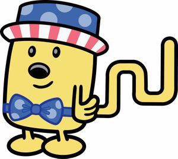

Though slightly belated, Wubbzy and the gang wanted to wish everyone a happy Independance Day. In Wuzzleburg, the first week of July is recognized as a grand week for picnics, so Wubbzy, Widget and Walden have decked out in their finest picnicing gear. Just try not to eat them!! - Carrie

A Monsterous Time

We recently received a copy of Episode 10 and I was just WILD about this clip. In "Monster Madness", Wubbzy gets his imagination into a monsterous mess. After watching this clip below, I'm sure you can understand. Scary tales like "The Bug-Eyed Bug from Buggy Burg", "The Blob from Planet Pooptron", and "Dude, Where's My Head?" may leave you with a chuckle, but they leave Wubbzy with a serious case of the heebie-jeebies! It takes a little help from Widget and Walden for Wubbzy to realize that there's no such thing as monsters, except in your imagination! Download madmonster.mov
And the Winner Is...
Susan Miller, one of the Wow! Wow! Wubbzy! executive producers, had a grand plan to increase productivity in the studios and at the same time celebrate the launch of Wow! Wow! Wubbzy! on Nick Jr's website. She offered up a free video iPod to any crew member that got the highest score on the game Wubbzy's Wow! Wow! Ring Catch. Unfortunately, things took a turn for the worse. Once the e-mail was circulated, we all promtly dropped everything and competed in an intense bout of Ring Catch. It was ugly. We had six cases of carpel tunnel flare up from such intense mouse usage, and four people pas sed out from dehydration because they just wouldn't walk away from their computers long enough for a drink! But through it all, almost ten days of olypmic style competition, one man, prevailed. We present to you Dave Gerhard! The KING of Ring Catch with a high score of 994. The photo at the right is from the iPod Presentation Ceremony. (You'll also notice that a prerequisite for working in the Wow! Wow! Wubbzy! offices is that everyone has to not only draw like Bob Boyle, but look like him too!) Way to go Dave! Check out the Wow! Wow! Wubbzy! site on Nick Jr. here and get your own Ring Catch high score. - Carrie
sed out from dehydration because they just wouldn't walk away from their computers long enough for a drink! But through it all, almost ten days of olypmic style competition, one man, prevailed. We present to you Dave Gerhard! The KING of Ring Catch with a high score of 994. The photo at the right is from the iPod Presentation Ceremony. (You'll also notice that a prerequisite for working in the Wow! Wow! Wubbzy! offices is that everyone has to not only draw like Bob Boyle, but look like him too!) Way to go Dave! Check out the Wow! Wow! Wubbzy! site on Nick Jr. here and get your own Ring Catch high score. - Carrie
Art In Its Highest Form

It's true! This shot of MonaWalden was taken by a visitor at the Wuzzleburg Louvre! The Wow! Wow! Wubbzy! collection is normally based in the Wuzzleburg Louvre, but will be now be touring. The collection, entitled "The Wuzzleburg Renaissance", includes such famous paintings as "Marshmallow Forest At Night", "Portrait of the Mailman and his Wife", and "Madonna with Fleegle". The collection will be touring in more than seven countries. Keep your eyes pealed to see it in a city near you! - Carrie
Getting Closer

As we get closer to the launch of Wow! Wow! Wubbzy! things are getting more and more exciting! We just received the first on-air promo that Nick, Jr. will be airing. Thanks to Anne Mullen, at Nick, the head of on-air promotions and the team that helped to put everything together:
Producer/Writer: Shannon Mattaro
Project Manager: Amy Myjak
Production Manager: Hilary Wolk
Designer: Chris Papa
Executive Producer: Anne Mullen
Editor: Amanda Hughes - Editional Effects
Audio: Dan O'Sullivan - Hothead
Voice Over: Chris Phillips
Animated by: Stanton Cruse
WOW! WOW! Everybody did a great job!
Download wubbzy_promo.mov
- Carrie
Animated by: Stanton Cruse
WOW! WOW! Everybody did a great job!
Download wubbzy_promo.mov
- Carrie
Hey, Thanks!

We had such a great time with Bob and his wife, Terri, in New York. There are so many people here that are making a huge impact on Wow! Wow! Wubbzy! Working all the way across the country, Bob had never even met many of them! They bopped all over Manhattan meeting and greeting. Afterward, Bob even sent out little personalized notes to a lot of people. Our favorite was the one he sent to Sharyn Traub at Nickelodeon PR. She makes sure that people hear about our great show. Thanks to everyone for meeting with Bob, and thanks to Bob for such cute little notes!!
- Carrie
PS: Wubbzy and Angelina?? Hey, you never know... keep your eyes out for Angelubbzy!!
Walden's Dance Grooves

Watch out "Darrin's Dance Grooves"! Walden's got it all over you when it comes to his new pop-n-lock routine. Walden didn't just learn his moves on the streets. He's researched all the right routines and his books show him how to groove. Who do you think taught Madonna how to belly dance? In Episode 7's "Gotta Dance", Walden provides Widget with the right research for ballet. Wait till you see Widget's modern take on the dance. She invents a new sixth position and masters grand jetè followed by a port-de-plop! - Carrie
Download dancing_walden.mov
It's the Little Things
beautiful Wuzzleburg at night
So the funny thing about animation is that every little thing needs to be created from scratch. The characters, anything the characters interact with, the settings, the sound. Everything! And believe it or not, it can take a whole team to design these things. We have background artists, who make the backgrounds and environments, prop artists, who make any kind of item that a character interacts with, character designers, and effects artists. Everything from a cloud of dust, to a splash, to even a tooth gleam has to be created as an effect. Taken as a whole, sometimes it's easy not to notice these things. You just so happen to be special enough to have the all-access pass to Wuzzleburg. That means that you get to see these things individually and admire them for their unique and individual beauty. A lot of work goes into these "little things". So let's all say thanks to these incredible artists.
Thanks
- Carrie

everyday residents of Wuzzleburg: a policeman and alien

a tooth gleam, a splash, and a dust cloud
pickles and mulligan stew!